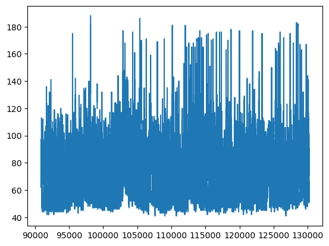
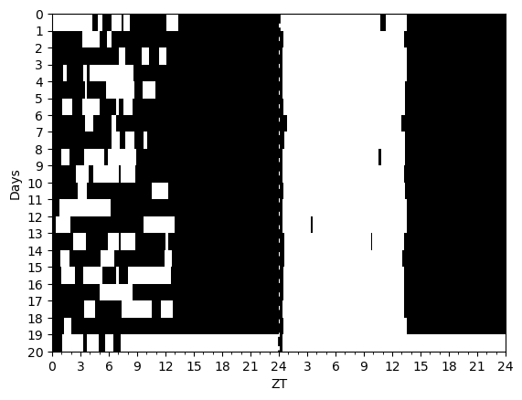

wearable_schema = {
type: "object",
"properties": {
"steps": {
"type": "array",
"items": { "type": "object", "properties": {
"start": { "type": "number" },
"end": { "type": "number" },
"steps": { "type": "number" } } },
"minItems": 1
},
"wake": {
"type": "array",
"items": { "type": "object", "properties": {
"start": { "type": "number" },
"end": { "type": "number" },
"wake": { "type": "number" } } }
},
"heartrate": {
"type": "array",
"items": { "type": "object", "properties": {
"timestamp": { "type": "number" },
"heartrate": { "type": "number" },
} } },
},
"required": ["steps", "wake", "heartrate"]
}Readers
test_wearable_data = {
"steps": [ { "start": 0, "end": 1, "steps": 10 } ],
"heartrate": [ { "timestamp": 0, "heartrate": 10 } ],
"wake": [ { "start": 0, "end": 1, "wake": 1.0} ]
}
validate(instance=test_wearable_data, schema=wearable_schema)Define the WearableData class
WearableData
WearableData (_dataframe:pandas.core.frame.DataFrame, phase_measure:numpy.ndarray=None, phase_measure_times:numpy.ndarray=None, subject_id:str='unknown-subject', data_id:str='unknown- data-id', meta_data:Dict[str,Any]=None)
WearableData.steps_hr_loglinear
WearableData.steps_hr_loglinear ()
Find the log steps to hr linear regression parameters . hr=beta*log(steps+1.0)+alpha Returns beta,alpha
Make a routine to plot the available heartrate data.
WearableData.plot_heartrate
WearableData.plot_heartrate (t1=None, t2=None, ax:matplotlib.axes._axes.Axes=None, show_plot:bool=True, color:str='red', use_dates:bool=True, *args, **kwargs)
WearableData.scatter_hr_steps
WearableData.scatter_hr_steps (take_log:bool=True, *args, **kwargs)
| Type | Default | Details | |
|---|---|---|---|
| take_log | bool | True | Log transform the data? |
| args | |||
| kwargs |
WearableData.plot_hr_steps
WearableData.plot_hr_steps (t1:float=None, t2:float=None, *args, **kwargs)
Reading Wearable Data
The standard json should take the following format:
{
"steps": [ { "start": 1234567890, "end": 1234567895, "steps": 1234 }, ... ],
"heartrate": [ { "timestamp": 1234567890, "heartrate": 123 }, ... ],
"wake": [ { "start": 1234567890, "end": 1234567895, "wake": 1.0 }, ... ],
}The JSON can have other keys as well, but to be properly parsed, this format should be used. The steps key is the only required key, the others are optional.
The wake key have a value of 1.0 if the user was awake, and 0.0 if the user was asleep.
Dates are in unix time, and should be in seconds.
read_standard_csv
read_standard_csv (path:str, glob_str:str='*.csv', keyword:str='', bin_minutes:int=6, subject_id='unknown-subject', data_id='Exporter', sleep_trim:bool=False, inner_join:bool=False)
| Type | Default | Details | |
|---|---|---|---|
| path | str | path to the directory containing the csv files | |
| glob_str | str | *.csv | glob to use to find the csv files |
| keyword | str | entra filter to apply to the files for example a subject-id | |
| bin_minutes | int | 6 | |
| subject_id | str | unknown-subject | |
| data_id | str | Exporter | |
| sleep_trim | bool | False | drop any entries without a sleep-wake entry |
| inner_join | bool | False | if true, only keep entries that have both heartrate and sleep data |
| Returns | WearableData |
combine_wearable_streams
combine_wearable_streams (steps:pandas.core.frame.DataFrame, heartrate:pandas.core.frame.DataFrame, wake:pandas.core.frame.DataFrame, bin_minutes:int=6, subject_id:str='unknown- subject', data_id:str='Exporter', sleep_trim:bool=False, inner_join:bool=False)
| Type | Default | Details | |
|---|---|---|---|
| steps | DataFrame | dataframe with columns ‘start’, ‘end’, ‘steps’ | |
| heartrate | DataFrame | dataframe with columns ‘timestamp’, ‘heartrate’ | |
| wake | DataFrame | dataframe with columns ‘start’, ‘end’, ‘wake’ | |
| bin_minutes | int | 6 | bin size in minutes for the resampled combined data |
| subject_id | str | unknown-subject | |
| data_id | str | Exporter | |
| sleep_trim | bool | False | drop any entries without a sleep-wake entry |
| inner_join | bool | False | if true, only keep entries that have both heartrate and sleep data |
| Returns | WearableData |
read_standard_json
read_standard_json (filepath:str, bin_minutes:int=6, subject_id:str='unknown-subject', data_id:str='Exporter', gzip_opt:bool=False, sleep_trim:bool=False, inner_join:bool=False)
| Type | Default | Details | |
|---|---|---|---|
| filepath | str | path to json file | |
| bin_minutes | int | 6 | data will be binned to this resolution in minutes |
| subject_id | str | unknown-subject | subject id to be used |
| data_id | str | Exporter | name of the data source |
| gzip_opt | bool | False | set to true if the file is gzipped, will be autodetected if extension is .gz |
| sleep_trim | bool | False | drop any entries without a sleep-wake entry |
| inner_join | bool | False | if true, only keep entries that have both heartrate and sleep data |
| Returns | WearableData |
WearableData.fillna
WearableData.fillna (column_name:str='heartrate', with_value:float=0.0, inplace:bool=False)
| Type | Default | Details | |
|---|---|---|---|
| column_name | str | heartrate | column to fill in the dataframe |
| with_value | float | 0.0 | value to fill with |
| inplace | bool | False | if true, the WearableData object will be modified in place |
| Returns | WearableData |
Example of reading wearable data
filepath = EXAMPLE_DATA + '/sample_data/sample_data.json'
sample_data = read_standard_json(filepath=filepath, subject_id="sample")We can take a quick look at the data using the .head() command just like a pandas dataframe
sample_data.head()| timestamp | steps | heartrate | wake | datetime | time_total | |
|---|---|---|---|---|---|---|
| 0 | 1601074080 | 42.0 | NaN | NaN | 2020-09-25 22:48:00 | 22.8 |
| 1 | 1601074440 | 0.0 | NaN | NaN | 2020-09-25 22:54:00 | 22.9 |
| 2 | 1601074800 | 0.0 | NaN | NaN | 2020-09-25 23:00:00 | 23.0 |
| 3 | 1601075160 | 0.0 | NaN | NaN | 2020-09-25 23:06:00 | 23.1 |
| 4 | 1601075520 | 0.0 | NaN | NaN | 2020-09-25 23:12:00 | 23.2 |
We can also do filter functions just like a pandas dataframe
sample_data[sample_data['heartrate'] > 50.0].head()| timestamp | steps | heartrate | wake | datetime | time_total | |
|---|---|---|---|---|---|---|
| 90879 | 1633790520 | 1057.967269 | 97.0 | NaN | 2021-10-09 14:42:00 | 9110.7 |
| 90880 | 1633790880 | 457.574738 | 96.0 | NaN | 2021-10-09 14:48:00 | 9110.8 |
| 90881 | 1633791240 | 291.356444 | 90.0 | NaN | 2021-10-09 14:54:00 | 9110.9 |
| 90882 | 1633791600 | 9.000000 | 74.0 | NaN | 2021-10-09 15:00:00 | 9111.0 |
| 90883 | 1633791960 | 148.556869 | 62.0 | NaN | 2021-10-09 15:06:00 | 9111.1 |
sample_data[(sample_data.heartrate > 70.0) & (sample_data.wake < 0.50)].head()| timestamp | steps | heartrate | wake | datetime | time_total | |
|---|---|---|---|---|---|---|
| 92715 | 1634451480 | 46.000000 | 82.0 | 0.0 | 2021-10-17 06:18:00 | 9294.3 |
| 96092 | 1635667200 | 7.726629 | 72.0 | 0.0 | 2021-10-31 08:00:00 | 9632.0 |
| 96130 | 1635680880 | 32.000000 | 73.0 | 0.0 | 2021-10-31 11:48:00 | 9635.8 |
| 97250 | 1636084080 | 0.000000 | 72.0 | 0.0 | 2021-11-05 03:48:00 | 9747.8 |
| 97530 | 1636184880 | 30.000000 | 73.0 | 0.0 | 2021-11-06 07:48:00 | 9775.8 |
We can also compute some summary statistics using an aggregate function (just like a normal pandas dataframe)
sample_data[['steps', 'heartrate']].aggregate(['min', 'max', 'mean', 'median', 'std'])| steps | heartrate | |
|---|---|---|
| min | 0.000000 | 41.000000 |
| max | 2070.039298 | 188.000000 |
| mean | 67.413199 | 70.242047 |
| median | 0.000000 | 69.000000 |
| std | 179.328748 | 18.304894 |
sample_data['heartrate'].plot();
filled_data = sample_data.fillna(column_name='heartrate', with_value=0.0)
print(f" Filled data has {filled_data['heartrate'].count()} entries and the unfilled data has {sample_data['heartrate'].count()} entries") Filled data has 130227 entries and the unfilled data has 34061 entriessample_data.plot_hr_steps()We can also make an actogram of the steps data to show the long term patterns in the behavior.
Actogram(sample_data.time_total, sample_data.steps);Saving and Loading JSON
To save a WearableData object to json we can use
sample_data.to_json('test_export.json')and to load this back in we can do:
wdata_loaded = WearableData.from_json('test_export.json')WearableData.plot_light_activity
WearableData.plot_light_activity (show=True, vlines=None, *args, **kwargs)
Actiwatch Readers
Expected format for this follows the guidelines on predictdlmo. Should be a CSV file with the columns
Date,Time,Activity,White Light,Sleep/Wake
read_actiwatch
read_actiwatch (filepath:str, MIN_LIGHT_THRESHOLD=5000, round_data=True, bin_minutes=6, dt_format:str=None, data_id:str='Actiwatch', subject_id:str='unknown- subject')
| Type | Default | Details | |
|---|---|---|---|
| filepath | str | path to actiwatch csv file | |
| MIN_LIGHT_THRESHOLD | int | 5000 | used to trim off empty data at the beginning and end of the file, must reach this amount of light to be included. Turn this off can setting this to 0 or negative |
| round_data | bool | True | round the data to the nearest bin_minutes |
| bin_minutes | int | 6 | bin the data to this resolution in minutes, only used if round_data is true |
| dt_format | str | None | format of the date time string, if None, will be inferred |
| data_id | str | Actiwatch | name of the data source |
| subject_id | str | unknown-subject | subject id to be used |
| Returns | WearableData |
lib_path = circadian.__path__[0]
sample_actiwatch = read_actiwatch(filepath = lib_path + "/sample_data/sample_actiwatch.csv")
sample_actiwatch._dataframe.head()| datetime | time_total | activity | light_estimate | wake | |
|---|---|---|---|---|---|
| 0 | 2019-02-20 01:00:00 | 1.0 | 2720.0 | 345.435 | 1.0 |
| 1 | 2019-02-20 01:06:00 | 1.1 | 2162.0 | 924.555 | 1.0 |
| 2 | 2019-02-20 01:12:00 | 1.2 | 2341.0 | 1057.800 | 1.0 |
| 3 | 2019-02-20 01:18:00 | 1.3 | 2208.0 | 717.810 | 1.0 |
| 4 | 2019-02-20 01:24:00 | 1.4 | 2639.0 | 3.820 | 1.0 |
We can make some plots of the actiwatch data to help visualize it
sample_actiwatch.plot_light_activity()Can also make use of the pandas plotting functions under the hood, by accessing the underlying dataframe.
sample_actiwatch._dataframe.activity.plot();Here is an example of creating an actogram from the sample actiwatch data and adding in DLMO predictions from the Hannay single population model.
acto = Actogram(sample_actiwatch.time_total,
sample_actiwatch.light_estimate,
second_zeit=sample_actiwatch.activity);